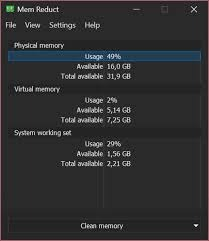

memreduct
Mem Reduct — это бесплатная, легковесная утилита для Windows, предназначенная для мониторинга и очистки оперативной памяти (ОЗУ) в режиме реального времени. Она помогает освободить до 25% используемой памяти, выгружая неактивные данные из системного кэша и простаивающих страниц, что улучшает отклик системы и повышает FPS в играх.
Скачать